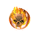

Ли'ат
Предметы / Орбы атаки
Открыть в интерактивной вики →
| Эффект | Шанс на более сильную критическую атаку |
|---|---|
| Суб-орб | 5 |
| Би-орб | 6.5 / 6.8 / 7.25 |
| Магни-орб | 8.5 / 9.2 / 10.25 |
| Архи-орб | 12.5 / 14 / 16.25 |

Открыть в интерактивной вики →
| Эффект | Шанс на более сильную критическую атаку |
|---|---|
| Суб-орб | 5 |
| Би-орб | 6.5 / 6.8 / 7.25 |
| Магни-орб | 8.5 / 9.2 / 10.25 |
| Архи-орб | 12.5 / 14 / 16.25 |